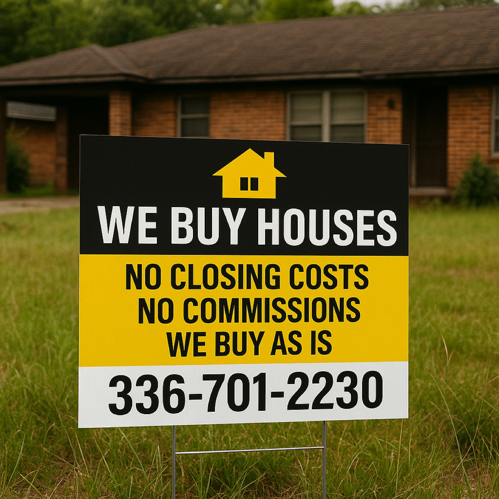

Sell without fixing everything first.
Old roof, foundation concerns, damaged flooring, cleanout needs, or years of deferred maintenance can make a traditional sale harder. An as-is offer keeps the repair list from becoming your second job.
America Home Buyers LLC - Triad North Carolina
Need a simpler way to sell a house that needs repairs, has tenants, was inherited, or just feels like too much right now? Send the address or call us. We will review the property and talk through whether an as-is offer or a traditional sale makes more sense.
Meet the local buyer
America Home Buyers is led by Toby Russell, a local Triad real estate investor who reviews property condition, repair needs, timing, and resale risk. You can ask questions, compare the offer with listing, and decide without pressure.
A practical selling option
America Home Buyers is built for sellers who want a straight answer. We look at the property, explain the offer, and help you understand the tradeoff between speed, convenience, repairs, fees, and final net proceeds.
Old roof, foundation concerns, damaged flooring, cleanout needs, or years of deferred maintenance can make a traditional sale harder. An as-is offer keeps the repair list from becoming your second job.
Some sellers need time. Some need speed. The goal is to make the timeline clear before you make a decision.
A cash offer is usually about convenience and certainty, not magic. We explain the numbers plainly so you can compare it against listing with an agent.
Built for real situations
Most sellers who reach out are not sitting on a picture-perfect house. They are dealing with repairs, cleanout, inherited belongings, tenant turnover, or a property that simply needs a practical exit plan.


When this helps
Simple process
Share the address, condition, timeline, and what you are trying to solve.
We look at condition, repairs, local resale value, and holding costs before making an offer.
If the offer works, we move toward closing. If listing makes more sense, you will know that too.
Why sellers reach out
We do not promise that a cash offer beats listing. We help you compare the tradeoff plainly.
| Traditional Listing | As-Is Direct Sale |
|---|---|
| May bring a higher retail price if the home is ready and you have time. | Can avoid repairs, showings, repeated negotiations, and buyer financing delays. |
| Often works best when the property is clean, accessible, and easier for buyers to finance. | Often helps when the property needs work, cleanout, privacy, or a flexible closing plan. |
| You may handle prep, inspections, appraisal concerns, and longer timelines. | You get a simpler number to compare. If it is not useful, you can still list. |
Local and reachable
For many sellers, the hardest part is just starting the conversation. You can call, text, or send the form. We will ask a few questions, look at the property, and explain the next step in plain English.

Real property work
Repair work, cleanout, debris, and deferred maintenance are not automatic deal breakers. Our project gallery shows the types of conditions we evaluate.


Local SEO pages
Seller answers
These short guides are built for the real questions sellers ask before they call: repairs, belongings, tenants, closing speed, and how to compare a direct offer with listing.
Compare repair cost, timeline, risk, and as-is options before spending money.
Compare optionsWhen listing may bring more and when a clean direct sale may fit better.
Major issuesWhat to review before taking on a difficult repair project.
As-is basicsWhat “as-is” actually means and when it may or may not help.
CleanoutHow debris, furniture, and cleanout needs affect the conversation.
TimelineWhat can speed up or slow down a direct sale.
Seller questions
No. The point of an as-is offer is that we can evaluate the property in its current condition.
No. Listing can be better when the property is market-ready and you have time. A cash offer may fit better when repairs, timing, privacy, or certainty matter more.
We focus on Winston-Salem, Greensboro, High Point, Thomasville, Lexington, and nearby Triad communities.
Requesting an offer does not affect your credit. If you are dealing with foreclosure, tax, estate, or legal concerns, speak with the right professional before making a final decision.
Ready when you are
Send the address and a few details. We will review the property and talk through the practical options. If listing is likely better, we will say that too.